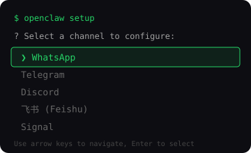
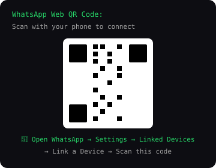

📋 前置条件
- 已安装 WhatsApp（手机端）
- 已完成 Ima Claw 安装（还没装？去领养 →）
- 无需付费，无需信用卡
STEP 1
安装向导中选择 WhatsApp
在 Ima Claw 安装向导中，当提示选择渠道时，选择 WhatsApp。
如果已经完成安装，可以运行以下命令重新进入渠道配置：
openclaw setup --channel whatsapp

STEP 2
手机扫描二维码
终端会显示一个 二维码，用手机 WhatsApp 扫描：
iPhone：设置 → 已关联的设备 → 关联设备 → 扫描二维码
Android：右上角菜单 → 已关联的设备 → 关联设备 → 扫描二维码
💡 二维码有效期约 60 秒，过期后终端会自动刷新生成新的。

STEP 3
手机确认连接
扫描后，手机上会弹出确认提示。点击 确认关联 即可。
连接成功后，终端会显示"WhatsApp connected"，配置文件会自动更新。
# 自动写入的配置
{
"channels": {
"whatsapp": {
"enabled": true
}
}
}
{
"channels": {
"whatsapp": {
"enabled": true
}
}
}
STEP 4
验证连接 ✅
用另一个 WhatsApp 号码（或让朋友帮忙）给你的 WhatsApp 号码发条消息：
嘿，你好！你是谁？
如果龙虾回复了，说明一切就绪！🎉
恭喜！你的 Ima 龙虾已接入 WhatsApp
现在可以用 WhatsApp 和你的 Ima 龙虾对话了
❓ 常见问题
扫码后一直转圈连不上？▾
1. 确保手机和服务器在同一网络环境（或手机有良好的网络连接）
2. 尝试重启终端程序重新生成二维码
3. 检查是否已有 4 个关联设备（WhatsApp 最多支持 4 个关联设备）
多设备登录有限制吗？▾
WhatsApp 支持最多 4 个关联设备。Ima Claw 会占用一个设备名额。如果已满，需要先在手机上移除一个已关联的设备。
会占用手机上的 WhatsApp 吗？▾
不会。Ima Claw 作为关联设备独立运行，不影响你手机上的 WhatsApp 正常使用。你和龙虾可以同时在线。
 Telegram
Telegram Discord
Discord 飞书
飞书 Signal
Signal iMessage
iMessage